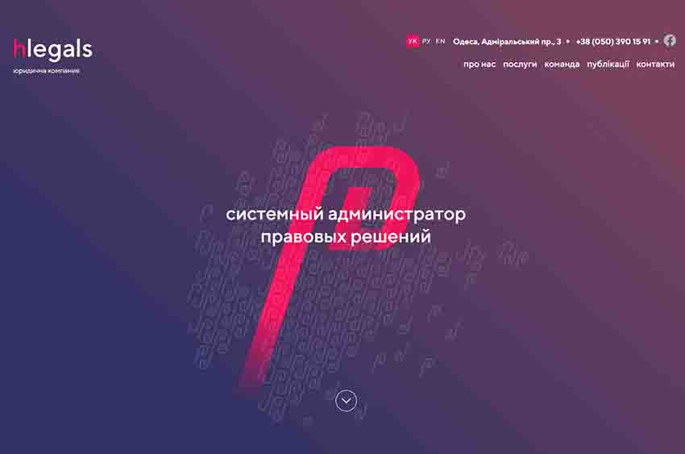
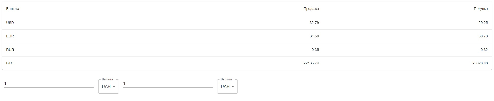

Мої проекти
React / Typescript програма "Магазин"
Головна сторінка
Сторінка авторизації

Це моя програма, яку я робив за допомогою React і використовуючи TypeScript для більш ефективного та правильного запису коду.Я отримую дані з API ( fakestoreapi.com ) і записую їх у базі даних redux/toolkit з використанням axios. Я використувую material UI ( tailwindcss.com ) щоб зробити його красивішим і чуйним. Сайт зроблений за допомогою React-Router-Dom, тому це SPA (Single page application)
Посилання на github
React application "Restaurant management"

Це моя програма, яку я розробив за допомогою React JS. Я отримую дані з API ( mockapi.io ) і записую їх у базу даних react-redux. Я використовую material UI ( mui.com ) щоб зробити його красивішим і чуйним. Сайт зроблений за допомогою React-Router-Dom, тому це SPA (Single page application)
Посилання на github
Останій проект від курсу
Це була веб-сторінка з мого курсу hmtl/css. Тут я маю деякі знання про html, css і як з ними працювати. Я використовував більше js для цієї веб-сторінки, і я був дуже щасливий, тому що навчився це сам. Тут ви можете побачити головну веб-сторінку,
але Ви завжди можете натиснути на посилання нижче та переглянути мій проект онлайн. Цей проект працює трьома мовами, тому що він був у макеті. Я зробив усе можливе, щоб це спрацювало, тому що мені подобається, як працює моя веб-сторінка.
Сторінка адаптивна, що дуже зручно, оскільки ви можете переглядати сторінку з будь-якого пристрою і переглядати її завжди буде зручно. Клацніть на посилання нижче, і дивіться на мої роботи із задоволенням :)
Посилання на github
Проект від курсу, але це було одне із завдань

Це також був сайт із мого курсу HTML/CSS, де я вперше використав JS для «Menu Burger» і зрозумів, що це не так складно, як я уявляв. З набутими знаннями я вже міг би робити такі прості сайти на одній сторінці, та ще й використовуючи вже
трохи JavaScript. Натиснувши на посилання нижче, ви можете побачити, яким був мій перший сайт :)
Посилання на github
React додаток "Обмін валюти"

Це моя програма, яку я розробив з допомогою React JS. Я отримую дані з API і записую їх у базі даних (React-redux), показую їх у таблиці та використовую для обчислення. Я використовував інтерфейс матеріалу з( mui.com ) щою зробити його красивішим.
Посилання на github